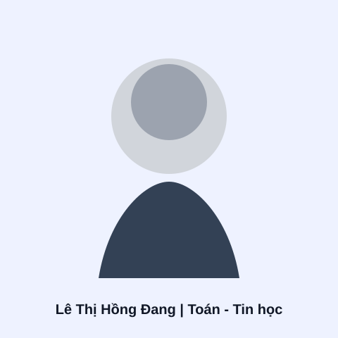
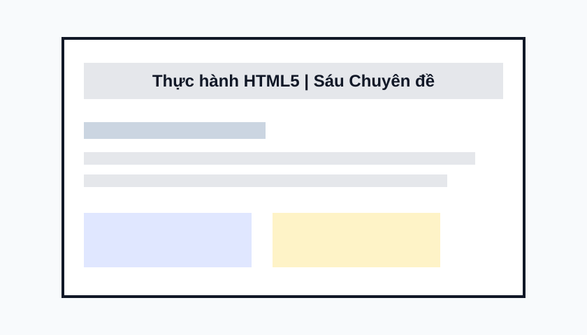

Sinh viên năm cuối ngành Toán - Tin học | Trường Đại học Khoa học Tự nhiên, ĐHQG-HCM
Giới thiệu bản thân

Hình đại diện kỹ thuật số của Lê Thị Hồng Đang
Xin chào! Tôi là Lê Thị Hồng Đang, sinh viên năm thứ tư chuyên ngành Toán - Tin học tại
Trường Đại học Khoa học Tự nhiên, Đại học Quốc gia Thành phố Hồ Chí Minh. Tôi có nền tảng vững
chắc về toán ứng dụng, tư duy phân tích định lượng và xử lý số liệu.
Tôi đặc biệt quan tâm đến việc nghiên cứu xu hướng hành vi người tiêu dùng, biến động thị trường và đối thủ
cạnh tranh trong các lĩnh vực tài chính, bất động sản và thương mại điện tử. Mục tiêu phát triển nghề nghiệp của
tôi là trở thành chuyên viên Phân tích Dữ liệu và Phân tích Sản phẩm, kết hợp khả năng mô hình hóa số
liệu với thiết kế giao diện trực quan để kiến tạo giá trị thực tiễn cho tổ chức.
Năng lực & Kỹ năng Chuyên môn
Kỹ thuật & Công nghệ
Ngôn ngữ Lập trình & Truy vấn: Python, R, SQL, C/C++, HTML5 và CSS3.
Nền tảng Toán & Trí tuệ Nhân tạo: Mô hình hóa thống kê, giải thuật học máy cơ bản, phân tích hồi quy và
LaTeX.
Thiết kế Giao diện & Trực quan hóa: Figma, Adobe Illustrator, xây dựng bảng điều khiển theo dõi chỉ số kinh
doanh.
Công cụ & Phương pháp Làm việc
Môi trường Phát triển: Visual Studio Code, XAMPP, máy chủ cục bộ Apache và bộ ứng dụng văn phòng Microsoft.
Quản lý Mã nguồn: Thành thạo Git và GitHub trong theo dõi lịch sử phiên bản và cộng tác dự án.
Kỹ năng Mềm: Tư duy phân tích logic, tư duy phản biện, kỹ năng giải quyết vấn đề, làm việc nhóm và giao tiếp
hiệu quả.
Dự án Tiêu biểu
Hệ thống Sáu Chuyên đề Thực hành HTML5

Kiến trúc tài liệu chuẩn ngữ nghĩa: Tiêu đề, Liên kết, Đa phương tiện và Bảng dữ liệu
Bộ giải pháp giao diện gồm sáu trang thực hành chuyên sâu theo chuẩn tài liệu HTML5, tập trung vào cấu trúc
ngữ nghĩa mạch lạc, phân cấp tiêu đề logic, điều hướng nội bộ tối ưu và tính tiếp cận cao.
Quy trình phân tích số liệu: Truy vấn SQL, làm sạch dữ liệu, trực quan hóa và đúc kết nhận định
Dự án thiết kế bảng điều khiển trực quan phân tích kết quả kinh doanh và xu hướng hành vi khách hàng của
chuỗi bán lẻ thời trang. Hệ thống được tổ chức khoa học qua bốn góc nhìn: Tổng quan doanh thu, Hồ sơ khách
hàng, Danh mục sản phẩm và Số liệu chi tiết.
Quá trình Học tập & Thành tích
Chương trình đào tạo: Sinh viên ngành Toán - Tin học | Trường Đại học Khoa học Tự nhiên, ĐHQG-HCM (Niên khóa
2022 – Hiện tại).
Nội dung trong kế hoạch học tập của portfolio
Học phần / Đề tài
Sản phẩm & Kết quả Thực hiện
Thiết kế Trang Web Cơ bản
Trang hồ sơ cá nhân và sáu chuyên đề HTML5
Trực quan hóa Dữ liệu
Bảng điều khiển bán lẻ và báo cáo an toàn giao thông
Xử lý Ngôn ngữ Tự nhiên & Thị giác Máy tính
Nền tảng hỗ trợ học ngôn ngữ ký hiệu bằng trí tuệ nhân tạo
Khoa học Dữ liệu với Python
Mô hình hồi quy dự đoán nguy cơ sức khỏe
Mô hình Tối ưu hóa trong Kinh tế
Phân tích hồi quy tác động doanh số bán lẻ
Mục tiêu Học tập Trọng tâm
Làm chủ kiến trúc tài liệu HTML5 chuẩn mực, phân biệt sâu sắc vai trò của phần thông tin đầu trang head và
thân trang body.
Kiểm soát tính chính xác của toàn bộ đường dẫn liên kết href, nguồn ảnh tương đối src và tương tác nhãn
label cho người dùng.
Vận hành thành thạo máy chủ cục bộ Apache trong bộ phần mềm XAMPP để kiểm thử trang web trước khi triển
khai.
Quản trị mã nguồn chuyên nghiệp bằng hệ thống Git và lưu trữ dự án an toàn trên nền tảng GitHub.
Nhật ký Thực hành & Đúc kết Kinh nghiệm
Bài học về Đường dẫn & Tổ chức Thư mục
Việc sử dụng đường dẫn tương đối giúp di chuyển project thuận tiện khi giữ nguyên cấu trúc thư mục và tên
file. Cấu trúc tách riêng thư mục hình ảnh giúp tài nguyên luôn được quản lý ngăn nắp, khoa học.
Bài học về Biểu mẫu & Khả năng Tiếp cận
Thuộc tính for của thẻ label phải luôn trùng khớp với thuộc tính id của thẻ input. Quy tắc này tạo ra trải
nghiệm chạm chọn dễ dàng trên thiết bị di động và hỗ trợ các công cụ trợ năng nhận diện chính xác trường dữ
liệu.